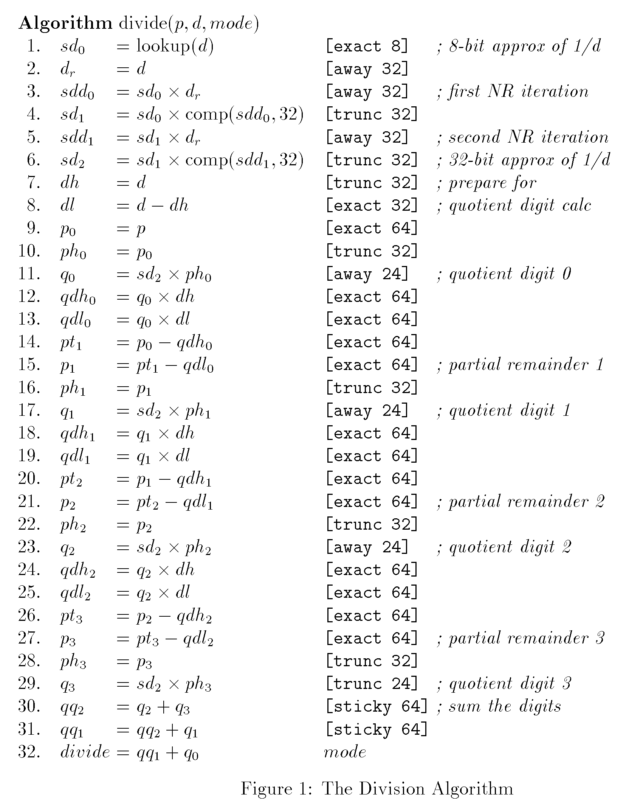
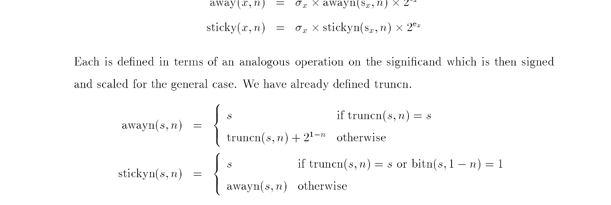
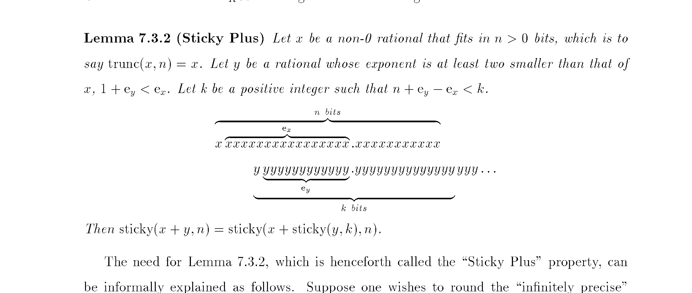

Finding Aver's grandfather
I found a more than 30-year-old grandfather of my language and when I tried to implement its core paper in Aver just for fun - I've found a bug hiding in the paper's presentation for 30 years.
When I was developing Aver I was sure that it has to have two properties when it comes to formal verification:
- Everything has to be one grammar (no verifier/prover language leaking into the source)
- Compiler needs to be deterministic for proving
This means that the compiler doesn't need to be "smart" as in having an LLM in there, but has to have a number of good strategies, a way to reuse lemmas and combine them for more complicated induction. I was grinding hard to somehow "make it work" and then... I found out that there is a lineage I was not aware of and a big chunk of my problems was already solved. Here comes the story of Aver finding its grandfather ACL2 and how it turned out.
History
In 1994 a mathematician Thomas R. Nicely found a bug in early Intel Pentium processors. In a nutshell - Intel wanted a faster division and used a SRT algorithm, and this algorithm needs a lookup table. They ended up producing chips with 5 values mismatched in that table (0 instead of +2). The error was cumulative because of the nature of the algorithm, you could even see it easily by just using Windows Calculator and dividing 4,195,835 by 3,145,727 (the most famous combination):
$ python3 -c "print(4195835 / 3145727)"
1.333820449136241
# the flawed Pentium FDIV returned:
1.333739068902037589Intel claimed the bug was not that serious, pretty rare (it required a specific combination of numbers) and regular users won't even notice it. But it was there, crystal clear in the shipped silicon in millions of households, universities and companies. It was a huge PR problem for Intel, they finally offered a free replacement. The whole thing cost them almost half a billion in 1995 dollars. Interestingly there were also software level patches, which were totally consuming the speedup from the new algorithm. For the record: I was 6 at the time, dreaming about my first PC - the Celeron I would eventually get didn't even exist yet.
AMD was developing its K5 processor at the time, and they certainly didn't want to have a bug like that. They hired Computational Logic Inc. - Moore and Kaufmann's shop - (Lynch was from AMD side) to prove the algorithm for them. It was a huge thing, and they already had ACL2 almost ready for that task. ACL2 stands for A Computational Logic for Applicative Common Lisp. Applicative Common Lisp was their stripped out version of Common Lisp without side-effects and total first-order logic functions. ACL2 added automated theorem prover on top of that with the ability to feed it user-provided theorems. Which is something I've only figured out fully less than a week ago in Aver - that my "laws" are already shaped to support such a function. Here comes the more complicated part, how to incorporate them? How to structure them for induction? And all the hard questions... ACL2 already tried to tackle! They called it The Method and to be honest this is my gold-mine now. Not in a sense that everything can be copied to Aver, but I can see they solved similar problems, which feels - well - kind of refreshing! Similar designs and similar problems, how not to love that?
And a K5 verification was a huge success, one of the biggest industrial proofs done back then - over 1600 definitions and lemmas, and the whole proof replayed in two hours. They published paper about it in 1996. And the lineage kept going - in 1999 Russinoff caught two real bugs in K7's FPU multiplier with the same toolchain, before the silicon was made.
This is the entire algorithm by the way - all 32 lines of it (see those [sticky 64] annotations near the end? remember them):

Aver trying to honor ACL2
When I found out about this I immediately decided to call the next Aver release (focused on proving side of the language) "The Method". And I thought about a fun way to celebrate that - I'd tell the agent to replicate the original paper in Aver. I was sure it won't be fully proved in Lean or Dafny yet, I am still on my way through The Method and other problems (maybe 0.26? 0.27?), but it still sounded like something I definitely have to do.
And the funniest and most trivia-worthy thing happened. Agent OCR-ed all the algorithms, lemmas from paper and faithfully transcribed the definitions to Aver (try it in the playground). And before you ask - the paper's own worked examples pass against my transcription, so the transcription is faithful. I ran aver verify (which is just the deterministic tests over given domain, nothing fancy, not even the proving part yet) and... it fails. The sticky algorithm for division (one they call "singularly difficult to prove" in the paper) just fails, the simplest way to reproduce is to take x = 1 and y = 1/3 at 3 bits of precision: the paper's Lemma 7.3.2 says both sides must be equal, but the printed definition gives 4/3 on the left and 11/8 on the right.
$ time aver verify sticky_typo.av
Verify: sticky_typo.av
✓ ratEq 2/2
✓ ratAdd 1/1
✓ ratMul 1/1
✓ twoPow 1/1
✓ pow2 1/1
✓ floorQ 1/1
✓ isOdd 1/1
✓ expo 1/1
✓ signif 1/1
✓ truncn 1/1
✓ bitn 1/1
✓ awayn 1/1
✓ stickynPaper 1/1
✓ stickynRtl 1/1
✓ lemmaHypotheses 1/1
✗ stickyPlusPaper law asPrintedIn1996 1204/3072 passed (300 mismatch)
fail[verify-mismatch]: law violated
|
187 | stickyPlusPaper(xn, xd, yn, yd, n, k) => true
| ^^^^^^^^^^^^^^^^^^^^^^^^^^^^^^^^^^^^^^^^^^^^^ verify-mismatch
fail[verify-mismatch]: law violated
|
187 | stickyPlusPaper(xn, xd, yn, yd, n, k) => true
| ^^^^^^^^^^^^^^^^^^^^^^^^^^^^^^^^^^^^^^^^^^^^^ verify-mismatch
fail[verify-mismatch]: law violated
|
187 | stickyPlusPaper(xn, xd, yn, yd, n, k) => true
| ^^^^^^^^^^^^^^^^^^^^^^^^^^^^^^^^^^^^^^^^^^^^^ verify-mismatch
... and 297 more (use --verbose to see all)
✓ stickyPlusRtl law asInTheAcl2Sources 1504/3072
✓ smallPositive 2/2
✓ boundsOk 1/1
✓ pre 1/1
Summary: 1 file | 20 blocks | 2728/6164 cases passed | 300 failed | 3136 skipped by `when`
aver verify sticky_typo.av 1,40s user 0,08s system 96% cpu 1,541 totalI'm like "that is impossible". But it is there, numbers staring at me, the counterexamples, not one or two, 300 counterexamples (out of a 3,072-case grid) for the paper published 30 years ago. I go searching, I find the later implementations in Lisp, the Russinoff in main ACL2 repo (round.lisp from the 1996-98 AMD library, the same definition standalone, and its modern descendant) and the definition is different! There is a bug in the paper's presentation, I am sure they proved the right thing, but when they translated that to the paper's math notation they had a bug in there.


The bug is subtle, hiding in one of the arms, not obvious if you check on some examples in your head. The printed version returns the untouched s when the last kept bit happens to be 1 - so it's not even a rounding operation, it just leaks the infinite tail through. The ACL2 sources truncate to n-1 bits and force the last bit instead. That's the whole difference, and it survived 30 years in print.
The moral
You can't trust the prose or the spec if you can't run it. And this was the funniest and nerdiest thing that happened to me, period.
The ACL2 folks taught everyone this lesson 30 years ago. They just couldn't run their LaTeX.